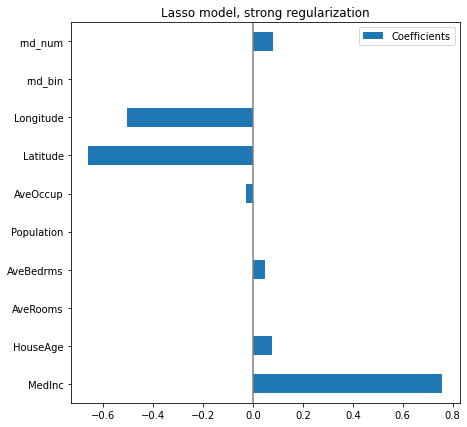
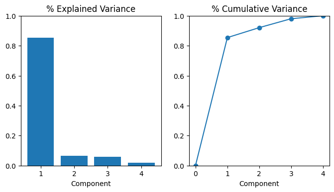

6 Feature selection and extraction
|
|

|
6.1 Setup
Code
# Scientific computing
import numpy as np
import pandas as pd
import seaborn as sns
import matplotlib as mpl
from matplotlib import pyplot as plt
%matplotlib inline
# Preprocessing and datasets
from sklearn.datasets import load_iris
from sklearn.datasets import load_digits
from sklearn.datasets import fetch_california_housing
from sklearn.datasets import make_classification
from sklearn.preprocessing import StandardScaler
from sklearn.pipeline import make_pipeline, Pipeline
# Modeling
from sklearn.model_selection import cross_validate
from sklearn.model_selection import train_test_split
from sklearn.model_selection import RepeatedKFold
from sklearn.model_selection import GridSearchCV
from sklearn.neighbors import KNeighborsClassifier
from sklearn.ensemble import RandomForestClassifier
from sklearn.ensemble import RandomForestRegressor
from sklearn.linear_model import RidgeCV
from sklearn.linear_model import Lasso
from sklearn.linear_model import LogisticRegression
from sklearn.svm import LinearSVC
from sklearn.svm import SVC
# Feature selection
from sklearn.feature_selection import VarianceThreshold
from sklearn.feature_selection import SelectKBest
from sklearn.feature_selection import chi2
from sklearn.feature_selection import f_classif
from sklearn.feature_selection import mutual_info_regression
from sklearn.feature_selection import SequentialFeatureSelector
from sklearn.feature_selection import SelectFromModel
from sklearn.inspection import permutation_importance
from boruta import BorutaPy
# Feature extraction
from sklearn.decomposition import PCA
from openTSNE import TSNE as oTSNE
import umap
from sklearn.cluster import KMeans
from sklearn.cluster import FeatureAgglomeration6.2 Feature selection
The classes in the sklearn.feature_selection module can be used for feature selection/extraction methods on datasets, either to improve estimators’ accuracy scores or to boost their performance on very high-dimensional datasets.
6.2.1 Removing low variance features
Suppose that we have a dataset with boolean features, and we want to remove all features that are either one or zero (on or off) in more than 80% of the samples. Boolean features are Bernoulli random variables, and the variance of such variables is 0.8 * (1 - 0.8)
| 0 | 1 | 2 | |
|---|---|---|---|
| 0 | 0 | 0 | 1 |
| 1 | 0 | 1 | 0 |
| 2 | 1 | 0 | 0 |
| 3 | 0 | 1 | 1 |
| 4 | 0 | 1 | 0 |
| 5 | 0 | 1 | 1 |
Code
| x1 | x2 | |
|---|---|---|
| 0 | 0 | 1 |
| 1 | 1 | 0 |
| 2 | 0 | 0 |
| 3 | 1 | 1 |
| 4 | 1 | 0 |
| 5 | 1 | 1 |
As expected, VarianceThreshold() has removed the first column, which has a probability of containing a zero.
6.2.2 Univariate feature selection
Scikit-learn exposes feature selection routines as objects that implement the transform() method. For instance, we can perform a \(\chi^2\) test to the samples to retrieve only the two best features as follows:
| sepal length (cm) | sepal width (cm) | petal length (cm) | petal width (cm) | |
|---|---|---|---|---|
| 0 | 5.1 | 3.5 | 1.4 | 0.2 |
| 1 | 4.9 | 3.0 | 1.4 | 0.2 |
| 2 | 4.7 | 3.2 | 1.3 | 0.2 |
| 3 | 4.6 | 3.1 | 1.5 | 0.2 |
| 4 | 5.0 | 3.6 | 1.4 | 0.2 |
| ... | ... | ... | ... | ... |
| 145 | 6.7 | 3.0 | 5.2 | 2.3 |
| 146 | 6.3 | 2.5 | 5.0 | 1.9 |
| 147 | 6.5 | 3.0 | 5.2 | 2.0 |
| 148 | 6.2 | 3.4 | 5.4 | 2.3 |
| 149 | 5.9 | 3.0 | 5.1 | 1.8 |
150 rows × 4 columns
Code
| petal length (cm) | petal width (cm) | |
|---|---|---|
| 0 | 1.4 | 0.2 |
| 1 | 1.4 | 0.2 |
| 2 | 1.3 | 0.2 |
| 3 | 1.5 | 0.2 |
| 4 | 1.4 | 0.2 |
| ... | ... | ... |
| 145 | 5.2 | 2.3 |
| 146 | 5.0 | 1.9 |
| 147 | 5.2 | 2.0 |
| 148 | 5.4 | 2.3 |
| 149 | 5.1 | 1.8 |
150 rows × 2 columns
These objects take as input a scoring function that returns univariate scores/p-values (or only scores for SelectKBest() and SelectPercentile()):
- For regression:
r_regression,f_regression,mutual_info_regression - For classification:
chi2,f_classif,mutual_info_classif
The methods based on F-test estimate the degree of linear dependency between two random variables. For example, we create a dataset with two informative features among a hundred. To simplify our example, we do not include either redundant or repeated features. In addition, We will explicitly not shuffle the dataset to ensure that the informative features will correspond to the three two columns of X.
We will create two machine learning pipelines.
The former will be a random forest that will use all available features.
The latter will also be a random forest, but we will add a feature selection step to train this classifier.
We will measure the average time spent to train each pipeline and make it predict. Besides, we will compute the testing score of the model. We will collect these results via cross-validation.
To analyze the results, we will merge the results from the two pipeline in a single pandas dataframe.
Let’s first analyze the train and score time for each pipeline.
Code
Code
We can draw the same conclusions for both training and scoring elapsed time: selecting the most informative features speed-up our pipeline. Of course, such speed-up is beneficial only if the generalization performance in terms of metrics remain the same. Let’s check the testing score.
Code
We can observe that the model’s generalization performance selecting a subset of features decreases compared with the model using all available features. Since we generated the dataset, we can infer that the decrease is because of the selection. The feature selection algorithm did not choose the two informative features.
Code
Fold #0 - features selected are: [30 1]
Fold #1 - features selected are: [10 1]
Fold #2 - features selected are: [10 1]
Fold #3 - features selected are: [30 1]
Fold #4 - features selected are: [61 1]We see that the feature 1 is always selected while the other feature varies depending on the cross-validation fold.
If we would like to keep our score with similar generalization performance, we could choose another metric to perform the test or select more features. For instance, we could select the number of features based on a specific percentile of the highest scores.
6.2.2.1 Mutual information
The Automobile dataset consists of 193 cars from the 1985 model year. The goal for this dataset is to predict a car’s price (the target) from 23 of the car’s features, such as make, body_style, and horsepower. In this example, we’ll rank the features with mutual information and investigate the results by data visualization. (The original dataset requires data cleaning, you could refer to https://skill-lync.com/student-projects/project-1-1299 for more details)
Code
Downloading...
From: https://drive.google.com/uc?id=1FoCRK2LQBo1hlPWK2fDDcOjjy-DnPiJw
To: /content/autos.csv
0% 0.00/21.6k [00:00<?, ?B/s]100% 21.6k/21.6k [00:00<00:00, 31.6MB/s]| symboling | make | fuel_type | aspiration | num_of_doors | body_style | drive_wheels | engine_location | wheel_base | length | ... | engine_size | fuel_system | bore | stroke | compression_ratio | horsepower | peak_rpm | city_mpg | highway_mpg | price | |
|---|---|---|---|---|---|---|---|---|---|---|---|---|---|---|---|---|---|---|---|---|---|
| 0 | 3 | alfa-romero | gas | std | 2 | convertible | rwd | front | 88.6 | 168.8 | ... | 130 | mpfi | 3.47 | 2.68 | 9 | 111 | 5000 | 21 | 27 | 13495 |
| 1 | 3 | alfa-romero | gas | std | 2 | convertible | rwd | front | 88.6 | 168.8 | ... | 130 | mpfi | 3.47 | 2.68 | 9 | 111 | 5000 | 21 | 27 | 16500 |
| 2 | 1 | alfa-romero | gas | std | 2 | hatchback | rwd | front | 94.5 | 171.2 | ... | 152 | mpfi | 2.68 | 3.47 | 9 | 154 | 5000 | 19 | 26 | 16500 |
| 3 | 2 | audi | gas | std | 4 | sedan | fwd | front | 99.8 | 176.6 | ... | 109 | mpfi | 3.19 | 3.40 | 10 | 102 | 5500 | 24 | 30 | 13950 |
| 4 | 2 | audi | gas | std | 4 | sedan | 4wd | front | 99.4 | 176.6 | ... | 136 | mpfi | 3.19 | 3.40 | 8 | 115 | 5500 | 18 | 22 | 17450 |
5 rows × 25 columns
The scikit-learn algorithm for MI treats discrete features differently from continuous features. Consequently, you need to tell it which are which. As a rule of thumb, anything that have a float dtype is not discrete. Categoricals (object or categorial dtype) can be treated as discrete by giving them a label encoding
Code
X = df.copy()
y = X.pop("price")
# Label encoding for categoricals
for colname in X.select_dtypes("object"):
# A way to perfrom label encoding see https://pandas.pydata.org/docs/reference/api/pandas.factorize.html
X[colname], _ = X[colname].factorize()
# All discrete features should now have integer dtypes (double-check this before using MI!)
discrete_features = X.dtypes == intScikit-learn has two mutual information metrics in its feature_selection module: one for real-valued targets (mutual_info_regression()) and one for categorical targets (mutual_info_classif()). Our target, price, is real-valued. The next cell computes the MI scores for our features and wraps them up in a nice dataframe.
Code
def make_mi_scores(X, y, discrete_features):
mi_scores = mutual_info_regression(X, y, discrete_features=discrete_features)
mi_scores = pd.Series(mi_scores, name="MI Scores", index=X.columns)
mi_scores = mi_scores.sort_values(ascending=False)
return mi_scores
mi_scores = make_mi_scores(X, y, discrete_features)
mi_scores[::3] # show a few features with their MI scorescurb_weight 1.436041
highway_mpg 0.948495
length 0.615407
bore 0.497058
stroke 0.385846
num_of_cylinders 0.331445
compression_ratio 0.132048
fuel_type 0.047279
Name: MI Scores, dtype: float64Code
Code
The fuel_type feature has a fairly low MI score, but as we can see from the figure below, it clearly separates two price populations with different trends within the horsepower feature. This indicates that fuel_type contributes an interaction effect and might not be unimportant after all. Before deciding a feature is unimportant from its MI score, it’s good to investigate any possible interaction effects – domain knowledge can offer a lot of guidance here.
6.2.3 Sequential feature selection
Sequential Feature Selection is available in the SequentialFeatureSelector transformer. SFS can be either forward or backward:
Forward-SFS is a greedy procedure that iteratively finds the best new feature to add to the set of selected features. Concretely, we initially start with zero feature and find the one feature that maximizes a cross-validated score when an estimator is trained on this single feature. Once that first feature is selected, we repeat the procedure by adding a new feature to the set of selected features. The procedure stops when the desired number of selected features is reached, as determined by the
n_features_to_selectparameter.Backward-SFS follows the same idea but works in the opposite direction: instead of starting with no feature and greedily adding features, we start with all the features and greedily remove features from the set. The direction parameter controls whether forward or backward SFS is used.
In general, forward and backward selection do not yield equivalent results. Also, one may be much faster than the other depending on the requested number of selected features: if we have 10 features and ask for 7 selected features, forward selection would need to perform 7 iterations while backward selection would only need to perform 3.
Code
SequentialFeatureSelector(estimator=KNeighborsClassifier(n_neighbors=3),
n_features_to_select=2)In a Jupyter environment, please rerun this cell to show the HTML representation or trust the notebook. On GitHub, the HTML representation is unable to render, please try loading this page with nbviewer.org.
SequentialFeatureSelector(estimator=KNeighborsClassifier(n_neighbors=3),
n_features_to_select=2)KNeighborsClassifier(n_neighbors=3)
KNeighborsClassifier(n_neighbors=3)
| sepal length (cm) | petal width (cm) | |
|---|---|---|
| 0 | 5.1 | 0.2 |
| 1 | 4.9 | 0.2 |
| 2 | 4.7 | 0.2 |
| 3 | 4.6 | 0.2 |
| 4 | 5.0 | 0.2 |
| ... | ... | ... |
| 145 | 6.7 | 2.3 |
| 146 | 6.3 | 1.9 |
| 147 | 6.5 | 2.0 |
| 148 | 6.2 | 2.3 |
| 149 | 5.9 | 1.8 |
150 rows × 2 columns
6.2.4 Feature selection from model
SelectFromModel is a meta-transformer that can be used alongside any estimator that assigns importance to each feature through a specific attribute (such as coef_, feature_importances_) or via an importance_getter callable after fitting. The features are considered unimportant and removed if the corresponding importance of the feature values are below the provided threshold parameter.
Apart from specifying the threshold numerically, there are built-in heuristics for finding a threshold using a string argument. **Available heuristics are “mean”, “median” and float multiples of these like “0.1*mean”. In combination with the threshold criteria, one can use the max_features parameter to set a limit on the number of features to select.**
/usr/local/lib/python3.9/dist-packages/sklearn/svm/_base.py:1244: ConvergenceWarning: Liblinear failed to converge, increase the number of iterations.
warnings.warn(| sepal length (cm) | sepal width (cm) | petal length (cm) | |
|---|---|---|---|
| 0 | 5.1 | 3.5 | 1.4 |
| 1 | 4.9 | 3.0 | 1.4 |
| 2 | 4.7 | 3.2 | 1.3 |
| 3 | 4.6 | 3.1 | 1.5 |
| 4 | 5.0 | 3.6 | 1.4 |
| ... | ... | ... | ... |
| 145 | 6.7 | 3.0 | 5.2 |
| 146 | 6.3 | 2.5 | 5.0 |
| 147 | 6.5 | 3.0 | 5.2 |
| 148 | 6.2 | 3.4 | 5.4 |
| 149 | 5.9 | 3.0 | 5.1 |
150 rows × 3 columns
6.2.5 A Concret example
The following dataset is our old friend which is a record of neighborhoods in California district, predicting the median house value (target) given some information about the neighborhoods, as the average number of rooms, the latitude, the longitude or the median income of people in the neighborhoods (block).
Code
| MedInc | HouseAge | AveRooms | AveBedrms | Population | AveOccup | Latitude | Longitude | |
|---|---|---|---|---|---|---|---|---|
| 0 | 8.3252 | 41.0 | 6.984127 | 1.023810 | 322.0 | 2.555556 | 37.88 | -122.23 |
| 1 | 8.3014 | 21.0 | 6.238137 | 0.971880 | 2401.0 | 2.109842 | 37.86 | -122.22 |
| 2 | 7.2574 | 52.0 | 8.288136 | 1.073446 | 496.0 | 2.802260 | 37.85 | -122.24 |
| 3 | 5.6431 | 52.0 | 5.817352 | 1.073059 | 558.0 | 2.547945 | 37.85 | -122.25 |
| 4 | 3.8462 | 52.0 | 6.281853 | 1.081081 | 565.0 | 2.181467 | 37.85 | -122.25 |
The feature reads as follow:
MedInc: median income in blockHouseAge: median house age in blockAveRooms: average number of roomsAveBedrms: average number of bedroomsPopulation: block populationAveOccup: average house occupancyLatitude: house block latitudeLongitude: house block longitudeMedHouseVal: Median house value in 100k$ (target)
To assert the quality of our inspection technique, let’s add some random feature that won’t help the prediction (un-informative feature)
Code
| MedInc | HouseAge | AveRooms | AveBedrms | Population | AveOccup | Latitude | Longitude | rnd_bin | rnd_num | |
|---|---|---|---|---|---|---|---|---|---|---|
| 0 | 8.3252 | 41.0 | 6.984127 | 1.023810 | 322.0 | 2.555556 | 37.88 | -122.23 | 0 | 0 |
| 1 | 8.3014 | 21.0 | 6.238137 | 0.971880 | 2401.0 | 2.109842 | 37.86 | -122.22 | 1 | 1 |
| 2 | 7.2574 | 52.0 | 8.288136 | 1.073446 | 496.0 | 2.802260 | 37.85 | -122.24 | 1 | 2 |
| 3 | 5.6431 | 52.0 | 5.817352 | 1.073059 | 558.0 | 2.547945 | 37.85 | -122.25 | 0 | 3 |
| 4 | 3.8462 | 52.0 | 6.281853 | 1.081081 | 565.0 | 2.181467 | 37.85 | -122.25 | 1 | 4 |
| ... | ... | ... | ... | ... | ... | ... | ... | ... | ... | ... |
| 9995 | 4.0775 | 10.0 | 6.140900 | 1.025440 | 1275.0 | 2.495108 | 39.14 | -121.03 | 0 | 9995 |
| 9996 | 4.0848 | 8.0 | 6.350394 | 1.091864 | 1977.0 | 2.594488 | 39.13 | -121.07 | 1 | 9996 |
| 9997 | 3.6333 | 7.0 | 7.243455 | 1.107330 | 1143.0 | 2.992147 | 39.11 | -121.05 | 0 | 9997 |
| 9998 | 3.4630 | 8.0 | 6.363636 | 1.166297 | 1307.0 | 2.898004 | 39.08 | -121.04 | 1 | 9998 |
| 9999 | 3.0781 | 7.0 | 5.487500 | 1.050000 | 246.0 | 3.075000 | 39.09 | -121.00 | 0 | 9999 |
10000 rows × 10 columns
In linear models, the target value is modeled as a linear combination of the features.
Code
model score on training data: 0.6049524592207427
model score on testing data: 0.5863921053581754Our linear model obtains a score of .60, so it explains a significant part of the target. Its coefficient should be somehow relevant. Let’s look at the coefficient learnt
Code
The AveBedrms have the higher coefficient. However, we can’t compare the magnitude of these coefficients directly, since they are not scaled. Indeed, Population is an integer which can be thousands, while AveBedrms is around 4 and Latitude is in degree.
So the Population coefficient is expressed in “100k$/habitant” while the AveBedrms is expressed in “100k$/nb of bedrooms” and the Latitude coefficient in “100k$/degree”. We see that changing population by one does not change the outcome, while as we go south (latitude increase) the price becomes cheaper. Also, adding a bedroom (keeping all other feature constant) shall rise the price of the house by 80k$.
So looking at the coefficient plot to gauge feature importance can be misleading as some of them vary on a small scale, while others vary a lot more, several decades. So before any interpretation, we need to scale each column (removing the mean and scaling the variance to 1).
Code
model score on training data: 0.6049222473801685
model score on testing data: 0.586090835494786Code

Now that the coefficients have been scaled, we can safely compare them. The MedInc feature, with longitude and latitude are the three variables that most influence the model.
The plot above tells us about dependencies between a specific feature and the target when all other features remain constant, i.e., conditional dependencies. An increase of the HouseAge will induce an increase of the price when all other features remain constant. On the contrary, an increase of the AveRooms will induce an decrease of the price when all other features remain constant.
We can check the coefficient variability through cross-validation: it is a form of data perturbation.
Code
cv_model = cross_validate(
model, X_with_rnd_feat, y, cv=RepeatedKFold(n_splits=5, n_repeats=5),
return_estimator=True, n_jobs=2
)
coefs = pd.DataFrame(
[model[1].coef_
for model in cv_model['estimator']],
columns=X_with_rnd_feat.columns
)
plt.figure(figsize=(9, 7))
sns.boxplot(data=coefs, orient='h', color='cyan', saturation=0.5)
plt.axvline(x=0, color='.5')
plt.xlabel('Coefficient importance')
plt.title('Coefficient importance and its variability')
plt.subplots_adjust(left=.3)Now if we want to select the four features which are the most important according to the coefficients. The SelectFromModel() is meant just for that. SelectFromModel() accepts a threshold parameter and will select the features whose importance (defined by the coefficients) are above this threshold.
Pipeline(steps=[('standardscaler', StandardScaler()), ('ridgecv', RidgeCV())])In a Jupyter environment, please rerun this cell to show the HTML representation or trust the notebook. On GitHub, the HTML representation is unable to render, please try loading this page with nbviewer.org.
Pipeline(steps=[('standardscaler', StandardScaler()), ('ridgecv', RidgeCV())])StandardScaler()
RidgeCV()
Code
Features selected by SelectFromModel: ['MedInc' 'AveBedrms' 'Latitude' 'Longitude']6.2.5.1 Linear models with sparse coefficients (Lasso)
In it important to keep in mind that the associations extracted depend on the model. To illustrate this point we consider a Lasso model, that performs feature selection with a L1 penalty. Let us fit a Lasso model with a strong regularization parameters alpha
Code
model score on training data: 0.5933235371761756
model score on testing data: 0.5673786563118284Code

Here the model score is a bit lower, because of the strong regularization. However, it has zeroed out 3 coefficients, selecting a small number of variables to make its prediction.
6.2.5.2 Randomforest with feature importance
On some algorithms, there are some feature importance methods, inherently built within the model. It is the case in RandomForest models. Let’s investigate the built-in feature_importances_ attribute.
Code
model score on training data: 0.9796643318943656
model score on testing data: 0.8429137479202747Code
MedInc is still the most important feature. It also has a small bias toward high cardinality features, such as the noisy feature rnd_num, which are here predicted having 0.1 importance, more than HouseAge (which has low cardinality).
6.2.5.3 Feature importance by permutation
We introduce here a new technique to evaluate the feature importance of any given fitted model. It basically shuffles a feature and sees how the model changes its prediction. Thus, the change in prediction will correspond to the feature importance.
Code
model score on training data: 0.9795458070557226
model score on testing data: 0.8448700648905965Code
We see again that the feature MedInc, Latitude and Longitude are important for the model. We note that our random variable rnd_num is now less important than Latitude. Indeed, the feature importance built-in in RandomForest has bias for continuous data, such as AveOccup and rnd_num.
6.2.5.4 Feature rejection using Boruta
Iteration: 1 / 100
Confirmed: 0
Tentative: 10
Rejected: 0
Iteration: 2 / 100
Confirmed: 0
Tentative: 10
Rejected: 0
Iteration: 3 / 100
Confirmed: 0
Tentative: 10
Rejected: 0
Iteration: 4 / 100
Confirmed: 0
Tentative: 10
Rejected: 0
Iteration: 5 / 100
Confirmed: 0
Tentative: 10
Rejected: 0
Iteration: 6 / 100
Confirmed: 0
Tentative: 10
Rejected: 0
Iteration: 7 / 100
Confirmed: 0
Tentative: 10
Rejected: 0
Iteration: 8 / 100
Confirmed: 9
Tentative: 0
Rejected: 1
BorutaPy finished running.
Iteration: 9 / 100
Confirmed: 9
Tentative: 0
Rejected: 1BorutaPy(estimator=RandomForestRegressor(n_estimators=44,
random_state=RandomState(MT19937) at 0x7F60C3A0E640),
n_estimators='auto',
random_state=RandomState(MT19937) at 0x7F60C3A0E640, verbose=2)In a Jupyter environment, please rerun this cell to show the HTML representation or trust the notebook. On GitHub, the HTML representation is unable to render, please try loading this page with nbviewer.org.
BorutaPy(estimator=RandomForestRegressor(n_estimators=44,
random_state=RandomState(MT19937) at 0x7F60C3A0E640),
n_estimators='auto',
random_state=RandomState(MT19937) at 0x7F60C3A0E640, verbose=2)RandomForestRegressor(n_estimators=44,
random_state=RandomState(MT19937) at 0x7F60C3A0E640)RandomForestRegressor(n_estimators=44,
random_state=RandomState(MT19937) at 0x7F60C3A0E640)| MedInc | HouseAge | AveRooms | AveBedrms | Population | AveOccup | Latitude | Longitude | rnd_bin | rnd_num | |
|---|---|---|---|---|---|---|---|---|---|---|
| 4901 | 1.3287 | 43.0 | 4.036723 | 1.090395 | 1412.0 | 3.988701 | 34.01 | -118.25 | 0 | 4901 |
| 4375 | 2.3421 | 48.0 | 3.425532 | 1.046809 | 633.0 | 2.693617 | 34.10 | -118.28 | 0 | 4375 |
| 6698 | 3.6572 | 26.0 | 4.160797 | 1.093023 | 3001.0 | 1.994020 | 34.14 | -118.10 | 0 | 6698 |
| 9805 | 3.2750 | 52.0 | 8.357827 | 1.543131 | 582.0 | 1.859425 | 36.55 | -121.92 | 1 | 9805 |
| 1101 | 3.5189 | 15.0 | 5.489011 | 1.027473 | 1786.0 | 2.453297 | 39.82 | -121.68 | 0 | 1101 |
| ... | ... | ... | ... | ... | ... | ... | ... | ... | ... | ... |
| 5734 | 5.1718 | 31.0 | 5.676417 | 1.063985 | 1359.0 | 2.484461 | 34.16 | -118.23 | 0 | 5734 |
| 5191 | 1.5256 | 36.0 | 4.897778 | 1.097778 | 702.0 | 3.120000 | 33.93 | -118.26 | 1 | 5191 |
| 5390 | 2.9344 | 36.0 | 3.986717 | 1.079696 | 1756.0 | 3.332068 | 34.03 | -118.38 | 0 | 5390 |
| 860 | 5.7192 | 15.0 | 6.395349 | 1.067979 | 1777.0 | 3.178891 | 37.58 | -121.96 | 0 | 860 |
| 7270 | 2.3900 | 25.0 | 3.928287 | 1.235060 | 1439.0 | 5.733068 | 33.98 | -118.23 | 1 | 7270 |
7500 rows × 10 columns
array(['MedInc', 'HouseAge', 'AveRooms', 'AveBedrms', 'Population',
'AveOccup', 'Latitude', 'Longitude', 'rnd_num'], dtype=object)6.3 Dimensional reduction
We now looked at our model-based method for feature engineering: principal component analysis (PCA). You could think of PCA as a partitioning of the variation in the data. PCA is a great tool to help you discover important relationships in the data and can also be used to create more informative features.
There are two ways you could use PCA for feature engineering.
The first way is to use it as a descriptive technique. Since the components tell you about the variation, you could compute the MI scores for the components and see what kind of variation is most predictive of your target. That could give you ideas for kinds of features to create – a product of
'Height'and'Diameter'if'Size'is important, say, or a ratio of'Height'and'Diameter'ifShapeis important. You could even try clustering on one or more of the high-scoring components. Biplot will be useful in this case.The second way is to use the components themselves as features. Because the components expose the variational structure of the data directly, they can often be more informative than the original features. Here are some use-cases:
- Dimensionality reduction: When your features are highly redundant (multicollinear, specifically), PCA will partition out the redundancy into one or more near-zero variance components, which you can then drop since they will contain little or no information.
- Anomaly detection: Unusual variation, not apparent from the original features, will often show up in the low-variance components. These components could be highly informative in an anomaly or outlier detection task.
- Noise reduction: A collection of sensor readings will often share some common background noise. PCA can sometimes collect the (informative) signal into a smaller number of features while leaving the noise alone, thus boosting the signal-to-noise ratio.
- Decorrelation: Some ML algorithms struggle with highly-correlated features. PCA transforms correlated features into uncorrelated components, which could be easier for your algorithm to work with.
PCA basically gives you direct access to the correlational structure of your data. You’ll no doubt come up with applications of your own!
Code
def plot_variance(pca, width=8, dpi=100):
# Create figure
fig, axs = plt.subplots(1, 2)
n = pca.n_components_
grid = np.arange(1, n + 1)
# Explained variance
evr = pca.explained_variance_ratio_
axs[0].bar(grid, evr)
axs[0].set(
xlabel="Component", title="% Explained Variance", ylim=(0.0, 1.0)
)
# Cumulative Variance
cv = np.cumsum(evr)
axs[1].plot(np.r_[0, grid], np.r_[0, cv], "o-")
axs[1].set(
xlabel="Component", title="% Cumulative Variance", ylim=(0.0, 1.0)
)
# Set up figure
fig.set(figwidth=8, dpi=100)
return axs| symboling | make | fuel_type | aspiration | num_of_doors | body_style | drive_wheels | engine_location | wheel_base | length | ... | engine_size | fuel_system | bore | stroke | compression_ratio | horsepower | peak_rpm | city_mpg | highway_mpg | price | |
|---|---|---|---|---|---|---|---|---|---|---|---|---|---|---|---|---|---|---|---|---|---|
| 0 | 3 | alfa-romero | gas | std | 2 | convertible | rwd | front | 88.6 | 168.8 | ... | 130 | mpfi | 3.47 | 2.68 | 9 | 111 | 5000 | 21 | 27 | 13495 |
| 1 | 3 | alfa-romero | gas | std | 2 | convertible | rwd | front | 88.6 | 168.8 | ... | 130 | mpfi | 3.47 | 2.68 | 9 | 111 | 5000 | 21 | 27 | 16500 |
| 2 | 1 | alfa-romero | gas | std | 2 | hatchback | rwd | front | 94.5 | 171.2 | ... | 152 | mpfi | 2.68 | 3.47 | 9 | 154 | 5000 | 19 | 26 | 16500 |
| 3 | 2 | audi | gas | std | 4 | sedan | fwd | front | 99.8 | 176.6 | ... | 109 | mpfi | 3.19 | 3.40 | 10 | 102 | 5500 | 24 | 30 | 13950 |
| 4 | 2 | audi | gas | std | 4 | sedan | 4wd | front | 99.4 | 176.6 | ... | 136 | mpfi | 3.19 | 3.40 | 8 | 115 | 5500 | 18 | 22 | 17450 |
5 rows × 25 columns
We’ve selected four features that cover a range of properties. Each of these features also has a high MI score with the target, price. We’ll standardize the data since these features aren’t naturally on the same scale.
Now we can fit scikit-learn’s PCA estimator and create the principal components. You can see here the first few rows of the transformed dataset.
Code
| PC1 | PC2 | PC3 | PC4 | |
|---|---|---|---|---|
| 0 | 0.382486 | -0.400222 | 0.124122 | 0.169539 |
| 1 | 0.382486 | -0.400222 | 0.124122 | 0.169539 |
| 2 | 1.550890 | -0.107175 | 0.598361 | -0.256081 |
| 3 | -0.408859 | -0.425947 | 0.243335 | 0.013920 |
| 4 | 1.132749 | -0.814565 | -0.202885 | 0.224138 |
| 5 | 0.547265 | -0.545141 | 0.139969 | 0.424955 |
| 6 | 0.869268 | -0.472834 | -0.294073 | 0.090174 |
| 7 | 0.974373 | -0.449233 | -0.435749 | -0.019102 |
| 8 | 1.796553 | -1.050783 | -0.081821 | -0.296071 |
| 9 | -0.306514 | -0.542020 | 0.138605 | 0.012612 |
After fitting, the PCA instance contains the loadings in its components_ attribute. We’ll wrap the loadings up in a dataframe.
Code
| PC1 | PC2 | PC3 | PC4 | |
|---|---|---|---|---|
| highway_mpg | -0.492347 | 0.770892 | 0.070142 | -0.397996 |
| engine_size | 0.503859 | 0.626709 | 0.019960 | 0.594107 |
| horsepower | 0.500448 | 0.013788 | 0.731093 | -0.463534 |
| curb_weight | 0.503262 | 0.113008 | -0.678369 | -0.523232 |
Code
# biplot
xvector = pca.components_[0]
yvector = -pca.components_[1]
xs = X_pca.to_numpy()[:,0]
ys = -X_pca.to_numpy()[:,1]
fig, ax1 = plt.subplots(nrows=1, ncols=1, figsize=(10, 9))
# First Plot : Principal Component Scores
x_min, x_max = -8, 8
y_min, y_max = -3, 3
ax1.set_xlim(x_min, x_max)
ax1.set_ylim(y_min, y_max)
for i in range(len(xs)):
plt.plot(xs[i], ys[i], 'bo')
ax1.set_xlabel("1'st Principal Component Scores")
ax1.set_ylabel("2'nd Principal Component Scores")
# Plot reference lines
ax1.hlines(0,-3.5,3.5, linestyles='dotted', colors='grey')
ax1.vlines(0,-3.5,3.5, linestyles='dotted', colors='grey')
# Second Plot : Principal Component Loadings 'PCs'
x_min, x_max = -1, 1
y_min, y_max = -1, 1
ax2 = ax1.twinx().twiny()
ax2.set_xlim(x_min, x_max)
ax2.set_ylim(y_min, y_max)
for i in range(len(xvector)):
ax2.arrow(0, 0, xvector[i], yvector[i], color='red', width=0.005, head_width=0.02)
ax2.annotate(X.columns[i], (xvector[i]*1.05, yvector[i]*1.05), color='red', size=14)
ax2.set_xlabel("1'st Principal Component (Loading)", color='red')
ax2.set_ylabel("2'nd Principal Component (Loading)", color='red')Text(0, 0.5, "2'nd Principal Component (Loading)")Recall that the signs and magnitudes of a component’s loadings tell us what kind of variation it’s captured. The first component (PC1) shows a contrast between large, powerful vehicles with poor gas milage, and smaller, more economical vehicles with good gas milage. We might call this the “Luxury/Economy” axis. The next figure shows that our four chosen features mostly vary along the Luxury/Economy axis.
array([<Axes: title={'center': '% Explained Variance'}, xlabel='Component'>,
<Axes: title={'center': '% Cumulative Variance'}, xlabel='Component'>],
dtype=object)
Let’s also look at the MI scores of the components. Not surprisingly, PC1 is highly informative, though the remaining components, despite their small variance, still have a significant relationship with price. Examining those components could be worthwhile to find relationships not captured by the main Luxury/Economy axis.
PC1 1.013739
PC2 0.379649
PC3 0.306207
PC4 0.204905
Name: MI Scores, dtype: float64The third component shows a contrast between horsepower and curb_weight – sports cars vs. wagons, it seems.
Code
| make | body_style | horsepower | curb_weight | |
|---|---|---|---|---|
| 118 | porsche | hardtop | 207 | 2756 |
| 117 | porsche | hardtop | 207 | 2756 |
| 119 | porsche | convertible | 207 | 2800 |
| 45 | jaguar | sedan | 262 | 3950 |
| 96 | nissan | hatchback | 200 | 3139 |
| ... | ... | ... | ... | ... |
| 59 | mercedes-benz | wagon | 123 | 3750 |
| 61 | mercedes-benz | sedan | 123 | 3770 |
| 101 | peugot | wagon | 95 | 3430 |
| 105 | peugot | wagon | 95 | 3485 |
| 143 | toyota | wagon | 62 | 3110 |
193 rows × 4 columns
To express this contrast, let’s create a new ratio feature:
6.4 Manifold learning
6.4.0.1 t-SNE
(1797, 64)Code
--------------------------------------------------------------------------------
TSNE(early_exaggeration=12, n_jobs=2, random_state=0, verbose=True)
--------------------------------------------------------------------------------
===> Finding 90 nearest neighbors using Annoy approximate search using euclidean distance...
--> Time elapsed: 0.79 seconds
===> Calculating affinity matrix...
--> Time elapsed: 0.08 seconds
===> Calculating PCA-based initialization...
--> Time elapsed: 0.01 seconds
===> Running optimization with exaggeration=12.00, lr=149.75 for 250 iterations...
Iteration 50, KL divergence 2.6162, 50 iterations in 0.5615 sec
Iteration 100, KL divergence 2.6249, 50 iterations in 0.4249 sec
Iteration 150, KL divergence 2.6110, 50 iterations in 0.5087 sec
Iteration 200, KL divergence 2.6054, 50 iterations in 0.4346 sec
Iteration 250, KL divergence 2.6028, 50 iterations in 0.4644 sec
--> Time elapsed: 2.40 seconds
===> Running optimization with exaggeration=1.00, lr=1797.00 for 500 iterations...
Iteration 50, KL divergence 0.9203, 50 iterations in 0.4606 sec
Iteration 100, KL divergence 0.8272, 50 iterations in 0.4424 sec
Iteration 150, KL divergence 0.7951, 50 iterations in 0.4422 sec
Iteration 200, KL divergence 0.7783, 50 iterations in 0.4284 sec
Iteration 250, KL divergence 0.7685, 50 iterations in 0.4518 sec
Iteration 300, KL divergence 0.7625, 50 iterations in 1.4672 sec
Iteration 350, KL divergence 0.7580, 50 iterations in 1.2427 sec
Iteration 400, KL divergence 0.7539, 50 iterations in 0.4364 sec
Iteration 450, KL divergence 0.7514, 50 iterations in 0.4209 sec
Iteration 500, KL divergence 0.7492, 50 iterations in 1.7576 sec
--> Time elapsed: 7.56 secondsCode
Text(0.5, 1.0, 'tSNE of the Digits dataset')6.4.0.2 UMAP
UMAP is useful for generating visualisations, but if you want to make use of UMAP more generally for machine learning tasks it is important to be be able to train a model and then later pass new data to the model and have it transform that data into the learned space. For example if we use UMAP to learn a latent space and then train a classifier on data transformed into the latent space then the classifier is only useful for prediction if we can transform data for which we want a prediction into the latent space the classifier uses.
Now to get a benchmark idea of what we are looking at let’s train a couple of different classifiers and then see how well they score on the test set. For this example let’s try a support vector classifier and a KNN classifier.
Code
(0.62, 0.9844444444444445)The goal now is to make use of UMAP as a preprocessing step that one could potentially fit into a pipeline.
Code
Text(0.5, 1.0, 'Umap of the Digits dataset')This looks very promising! Most of the classes got very cleanly separated, and that gives us some hope that it could help with classifier performance. We can now train some new models (again an SVC and a KNN classifier) on the embedded training data. This looks exactly as before but now we pass it the embedded data.
The next important question is what the transform did to our test data. In principle we have a new two dimensional representation of the test-set, and ideally this should be based on the existing embedding of the training set
Code
Text(0.5, 1.0, 'Umap of the Digits dataset')The results look like what we should expect; the test data has been embedded into two dimensions in exactly the locations we should expect (by class) given the embedding of the training data visualised above. This means we can now try out models that were trained on the embedded training data by handing them the newly transformed test set.
array([[ 4.73177004e+00, 2.46851373e+00],
[ 1.91173019e+01, 3.47619963e+00],
[ 7.86290264e+00, 1.09972172e+01],
[-8.19267273e+00, 3.35794115e+00],
[ 7.09956217e+00, 1.42389803e+01],
[ 1.32900066e+01, 1.82322578e+01],
[ 2.65943050e-01, -8.95168245e-01],
[ 8.13252068e+00, 1.00992136e+01],
[ 5.73924875e+00, 2.07148552e+00],
[ 5.40985489e+00, 1.51770325e+01],
[ 6.47868681e+00, 1.46163197e+01],
[ 7.92969179e+00, 9.91152573e+00],
[ 1.17540598e+01, -5.85403776e+00],
[ 1.21744642e+01, -6.17784595e+00],
[ 6.87150419e-01, -2.17636895e+00],
[ 1.28335676e+01, 1.65336361e+01],
[ 6.92930698e+00, 1.49666691e+01],
[ 1.00950708e+01, 6.95953965e-01],
[ 3.05954218e+00, 4.18441391e+00],
[ 1.22419624e+01, 1.81537476e+01],
[ 8.41183376e+00, 1.01441069e+01],
[ 9.57836246e+00, 2.75005311e-01],
[ 1.93220310e+01, 2.32694030e+00],
[ 1.28659058e+01, 1.85482330e+01],
[ 1.96019783e+01, 2.01119971e+00],
[ 4.99640083e+00, 1.86033607e+00],
[ 1.13867264e+01, -6.41329575e+00],
[ 2.00881138e+01, 3.05871224e+00],
[ 3.00027013e+00, -8.01352322e-01],
[ 2.92265922e-01, -2.01319861e+00],
[ 1.41106904e+00, 9.47769833e+00],
[ 2.43231082e+00, 1.04742994e+01],
[ 4.24076748e+00, 3.97745585e+00],
[-6.14816606e-01, -1.45310473e+00],
[ 1.03815241e+01, 1.65336680e+00],
[ 1.33825254e+01, 1.69268723e+01],
[ 7.61123228e+00, 1.40565615e+01],
[ 5.55537558e+00, 2.05418849e+00],
[ 6.94975233e+00, 1.43994637e+01],
[ 8.03399944e+00, 1.41689272e+01],
[ 1.11499023e+01, 1.69359303e+00],
[ 1.93824215e+01, 1.83013022e+00],
[ 4.15738869e+00, 5.18572140e+00],
[ 3.60030508e+00, 5.01691294e+00],
[ 8.05832386e+00, 1.41819515e+01],
[ 3.83167720e+00, 4.41925764e+00],
[ 1.04558792e+01, 1.46102712e-01],
[ 1.96752357e+00, 9.15024090e+00],
[ 1.96036167e+01, 2.88023281e+00],
[ 4.75290745e-01, -3.02901536e-01],
[ 1.28543739e+01, -6.69067383e+00],
[ 7.68392706e+00, 1.35354586e+01],
[ 5.70900965e+00, 2.04589939e+00],
[ 1.27460394e+01, -7.56970310e+00],
[-8.09807491e+00, 3.45251179e+00],
[-8.20304966e+00, 3.34776187e+00],
[ 1.01384201e+01, 6.57227516e-01],
[ 1.05179510e+01, 1.68638420e+00],
[ 7.96865273e+00, 1.05273275e+01],
[ 4.90999174e+00, 1.58829975e+01],
[ 8.63133049e+00, -4.62174177e+00],
[ 7.42704582e+00, 1.51531487e+01],
[ 1.93333473e+01, 1.75126565e+00],
[ 7.81681252e+00, 1.01148701e+01],
[ 1.88073101e+01, 2.74154377e+00],
[ 1.29166088e+01, -6.52322578e+00],
[ 9.41298866e+00, 1.08080494e+00],
[ 6.16237783e+00, -9.58264709e-01],
[ 7.35584676e-01, -1.40368450e+00],
[ 7.49761915e+00, 9.53435230e+00],
[ 1.26329851e+01, 1.74112072e+01],
[ 6.09630585e+00, -2.83607483e-01],
[ 4.56159449e+00, 4.63957405e+00],
[ 5.21145630e+00, 1.55418911e+01],
[ 8.52060318e+00, -5.29649198e-01],
[ 1.76717103e+00, 9.06908798e+00],
[ 1.12594156e+01, 1.60219014e+00],
[ 1.06761303e+01, 5.61923206e-01],
[ 1.52136588e+00, 9.05504322e+00],
[ 1.22102089e+01, 1.73202934e+01],
[ 6.19346762e+00, -2.01016366e-01],
[ 1.95389805e+01, 2.73830152e+00],
[ 6.07237339e+00, -7.12067902e-01],
[ 1.18179951e+01, -7.24027014e+00],
[ 2.35402918e+00, 9.97527313e+00],
[ 8.05538595e-01, -1.55245471e+00],
[-5.48529863e-01, -1.44640124e+00],
[ 8.46719360e+00, -4.49677277e+00],
[ 2.63080096e+00, -4.21153259e+00],
[ 1.34470768e+01, 1.80865421e+01],
[ 7.93155432e+00, 1.32082472e+01],
[ 2.90374517e+00, 5.25399637e+00],
[ 1.21058340e+01, -5.75693417e+00],
[ 1.18059082e+01, 1.69832764e+01],
[-2.30677761e-02, -2.63910270e+00],
[ 7.50664759e+00, 1.45911045e+01],
[ 2.61786890e+00, -4.19906235e+00],
[ 6.76057696e-01, -2.03193378e+00],
[ 1.87298660e+01, 2.62258267e+00],
[ 7.26300764e+00, 1.50124683e+01],
[ 1.90552788e+01, 3.07881856e+00],
[ 6.09509850e+00, -7.56763577e-01],
[ 6.17576075e+00, -7.26652086e-01],
[ 7.98868608e+00, 9.83880329e+00],
[ 1.21262283e+01, -7.42956352e+00],
[ 9.36670208e+00, 9.97476220e-01],
[ 1.25175686e+01, 1.71377945e+01],
[ 6.26237488e+00, 1.43485527e+01],
[ 5.53839064e+00, 1.20771849e+00],
[ 1.95191860e+01, 3.09513426e+00],
[ 1.93319950e+01, 2.04565048e+00],
[ 7.90213203e+00, 1.01868477e+01],
[ 4.40916538e+00, 4.91170883e+00],
[ 1.59102690e+00, 5.91555834e+00],
[ 1.06758175e+01, 7.85464406e-01],
[ 8.50780201e+00, -4.53833485e+00],
[ 3.33708262e+00, 4.26565790e+00],
[ 1.03685141e+01, 1.33268273e+00],
[ 5.50983715e+00, 1.92333841e+00],
[ 9.89408302e+00, 7.60242999e-01],
[ 1.92521572e+01, 3.28466463e+00],
[ 1.93915577e+01, 1.80793393e+00],
[-9.59185779e-01, -1.43418705e+00],
[ 5.38180447e+00, 1.55832243e+01],
[-2.10883573e-01, -1.04512537e+00],
[ 6.69982815e+00, -7.31428787e-02],
[ 2.64970207e+00, 1.04629345e+01],
[ 2.70043421e+00, -4.25971699e+00],
[ 1.29440527e+01, -6.61230564e+00],
[ 9.27611649e-01, -9.55748022e-01],
[ 1.18965158e+01, -6.58824778e+00],
[ 1.23818903e+01, 1.64546566e+01],
[ 2.48696733e+00, -4.27661419e+00],
[ 9.49136913e-01, -8.76113117e-01],
[ 1.91355953e+01, 2.56769919e+00],
[ 2.03352299e+01, 3.30455041e+00],
[ 5.40721941e+00, 1.76240933e+00],
[ 1.20430918e+01, 1.79942932e+01],
[ 1.66636074e+00, 8.91286182e+00],
[ 6.12154388e+00, 1.49706059e+01],
[ 5.76479673e+00, 2.05096912e+00],
[ 1.26848288e+01, 1.63744678e+01],
[ 1.91420193e+01, 3.13646555e+00],
[ 7.81396389e+00, 1.00339603e+01],
[ 1.26516829e+01, 1.84274235e+01],
[ 3.53068799e-01, -9.54452991e-01],
[ 1.02022676e+01, 1.75975370e+00],
[ 4.81706905e+00, 2.32386041e+00],
[ 1.26537113e+01, 1.69497089e+01],
[ 1.23623486e+01, 1.78191795e+01],
[ 8.54515076e-01, -1.01536226e+00],
[ 7.05518866e+00, 1.40135460e+01],
[ 2.21469665e+00, 5.26067495e+00],
[ 2.56542659e+00, 5.00661182e+00],
[ 1.80082548e+00, 9.62335300e+00],
[ 1.07883806e+01, 1.61723030e+00],
[ 9.88454342e+00, -2.33417273e-01],
[ 8.17566204e+00, 9.67235184e+00],
[ 1.88418846e+01, 2.49431753e+00],
[ 1.28272562e+01, -6.51219225e+00],
[ 8.06352520e+00, 1.05998135e+01],
[ 1.97371750e+01, 3.02595925e+00],
[ 8.25599575e+00, 1.07834330e+01],
[ 1.17708435e+01, 1.67840595e+01],
[ 1.96602249e+01, 2.35182858e+00],
[-4.44723725e-01, -1.08014917e+00],
[ 1.22830667e+01, 1.63258533e+01],
[ 1.00864286e+01, 1.41382837e+00],
[ 9.63279915e+00, 1.22358000e+00],
[ 1.17074785e+01, 1.73078613e+01],
[ 4.91881818e-01, -1.86782694e+00],
[ 9.27524626e-01, -3.64588648e-01],
[ 1.03519487e+01, 1.71525097e+00],
[ 1.21878176e+01, 1.66502571e+01],
[ 2.54178166e+00, -4.13714075e+00],
[-7.94874549e-01, -1.32138753e+00],
[ 8.94740105e+00, -7.02543706e-02],
[ 1.60824668e+00, 9.57526588e+00],
[ 7.69076777e+00, 1.38979092e+01],
[ 1.19308853e+01, -5.87281370e+00],
[ 1.96669064e+01, 2.94271183e+00],
[ 4.00215197e+00, 5.47322416e+00],
[ 1.04111280e+01, 6.09881997e-01],
[ 7.43757534e+00, 1.38516932e+01],
[ 4.26444292e+00, 4.87076139e+00],
[ 2.90101218e+00, 8.00403118e+00],
[ 7.60269547e+00, 1.41803226e+01],
[ 1.09815300e+00, -4.20335007e+00],
[ 3.72613168e+00, 5.09122086e+00],
[ 2.86066222e+00, 1.06173820e+01],
[ 2.42815518e+00, -4.00461817e+00],
[ 2.61127090e+00, 5.14484406e+00],
[ 1.18339100e+01, 1.67339821e+01],
[ 1.22553959e+01, -6.08764076e+00],
[ 4.20773602e+00, 4.65283203e+00],
[ 8.62094879e+00, -4.78529274e-01],
[ 1.29443531e+01, -6.50885916e+00],
[ 5.15094805e+00, 3.08955741e+00],
[ 1.90184188e+00, -4.20560122e+00],
[ 7.78751183e+00, 1.03105097e+01],
[ 4.66492891e+00, 4.62675238e+00],
[ 7.20657921e+00, 1.00898695e+01],
[ 1.23361588e+01, -7.76199770e+00],
[ 7.19676876e+00, 1.45420494e+01],
[-8.28833485e+00, 3.26244545e+00],
[ 1.93086472e+01, 2.02614713e+00],
[ 8.56536388e+00, 1.08816519e+01],
[ 1.56364882e+00, 9.02052307e+00],
[ 1.93720913e+01, 3.13724089e+00],
[ 1.03784208e+01, 1.45391178e+00],
[ 1.01358051e+01, -4.34333980e-01],
[ 7.30056190e+00, 1.39617376e+01],
[ 7.31627369e+00, 1.48641815e+01],
[ 2.33456850e+00, 8.97941303e+00],
[ 2.09031320e+00, 9.15919304e+00],
[ 1.35915003e+01, 1.69954529e+01],
[ 2.61211252e+00, 9.67325783e+00],
[ 5.70830059e+00, 2.07967734e+00],
[ 2.03164749e+01, 2.60851431e+00],
[ 1.23774891e+01, 1.72216015e+01],
[ 9.85767186e-01, -8.03058326e-01],
[ 6.18093252e+00, -2.71137953e-01],
[ 1.33752537e+01, 1.74806652e+01],
[ 7.87491941e+00, 1.15665522e+01],
[ 1.19647760e+01, 1.65779037e+01],
[ 1.58233976e+00, 8.97871685e+00],
[ 1.11217403e+01, -7.53401709e+00],
[ 2.77137256e+00, 1.07307339e+01],
[ 1.98257885e+01, 3.34123826e+00],
[ 9.88493085e-01, -6.36084318e-01],
[-5.42631149e-01, -1.49713326e+00],
[ 6.00486565e+00, -1.04312032e-01],
[ 5.50934029e+00, 1.54812260e+01],
[ 6.79059935e+00, 1.43414955e+01],
[ 8.20319176e+00, 1.14464417e+01],
[ 1.51997113e+00, 9.93821526e+00],
[ 9.26871109e+00, 8.75526607e-01],
[ 1.15349522e+01, -7.81715679e+00],
[ 2.84447312e+00, 4.09177399e+00],
[ 3.01040769e+00, 1.07021465e+01],
[ 5.26517034e-01, 3.56633514e-01],
[ 2.23956490e+00, 1.05628624e+01],
[ 7.40757895e+00, 1.05235777e+01],
[ 7.57580614e+00, 1.39888668e+01],
[ 1.19394760e+01, -5.87033081e+00],
[ 1.19141283e+01, -7.70306826e+00],
[ 1.45862615e+00, 9.67681885e+00],
[ 5.70191717e+00, 1.50980463e+01],
[ 1.27075195e+01, 1.71650524e+01],
[ 1.90146370e+01, 2.91956520e+00],
[ 1.00382977e+01, 1.05415595e+00],
[ 1.20603743e+01, -6.73856401e+00],
[ 1.21463318e+01, -5.93729019e+00],
[ 2.98728800e+00, 5.01034117e+00],
[ 4.37886333e+00, 5.13170195e+00],
[ 5.71549463e+00, 9.21205699e-01],
[ 1.97396123e+00, 8.89696503e+00],
[ 1.93121815e+01, 3.62117839e+00],
[ 1.83073807e+00, -4.12922049e+00],
[ 1.35204191e+01, 1.69217930e+01],
[ 3.89947939e+00, 4.44158363e+00],
[ 2.01038971e+01, 3.17173958e+00],
[ 1.76283216e+00, 8.74818230e+00],
[ 1.39133549e+00, 9.86009979e+00],
[ 4.96045542e+00, 2.09638572e+00],
[ 5.37798691e+00, 2.55944920e+00],
[ 1.00153885e+01, -4.30421829e-01],
[ 2.58003759e+00, 5.65518475e+00],
[ 3.10385394e+00, 4.31488323e+00],
[ 8.06058502e+00, 1.08455706e+01],
[ 5.15572214e+00, 2.80767560e+00],
[ 7.04855144e-01, -2.10322872e-01],
[ 1.32493429e+01, 1.70429554e+01],
[ 1.25905075e+01, -6.49386692e+00],
[-8.13499737e+00, 3.41613173e+00],
[ 1.97236271e+01, 3.78322840e+00],
[ 8.44617176e+00, -4.47045088e+00],
[ 2.22543931e+00, 8.94437122e+00],
[ 7.39531803e+00, 9.88773346e+00],
[ 4.95809615e-01, -1.17228663e+00],
[ 3.56299803e-02, -2.51918101e+00],
[ 9.97978687e-01, -9.73300874e-01],
[ 7.88709497e+00, 1.02189322e+01],
[ 1.19830122e+01, -6.20376873e+00],
[ 7.27090883e+00, 1.48665085e+01],
[ 7.90857124e+00, 1.04754467e+01],
[ 7.78450203e+00, 1.34945431e+01],
[ 9.20992315e-01, -3.84849370e-01],
[ 2.06664467e+00, 8.91980267e+00],
[ 6.82216120e+00, 1.47176342e+01],
[ 7.96708155e+00, 9.88164520e+00],
[ 9.99245048e-01, -1.10285509e+00],
[ 4.92387438e+00, 3.11497521e+00],
[ 4.15050173e+00, 5.49935293e+00],
[ 1.85929432e+01, 2.93218923e+00],
[ 1.05673771e+01, 1.58918750e+00],
[ 1.17832613e+01, -6.88497448e+00],
[ 2.05436015e+00, 8.92279243e+00],
[-8.32482147e+00, 3.22605968e+00],
[-6.68644428e-01, -1.44689846e+00],
[ 1.26672497e+01, -6.95247126e+00],
[ 4.02511883e+00, 4.68911886e+00],
[ 1.83233964e+00, 1.02191486e+01],
[ 1.24769630e+01, 1.83115978e+01],
[ 6.54460144e+00, 8.17592907e+00],
[ 4.99710226e+00, 2.14675093e+00],
[ 8.82683563e+00, -3.46012086e-01],
[ 5.66530418e+00, 2.03878736e+00],
[ 1.12690344e+01, 1.65654433e+00],
[ 1.94616604e+01, 1.83572781e+00],
[ 4.22863197e+00, 4.24069071e+00],
[ 1.32883120e+01, 1.72658978e+01],
[ 2.04569340e+00, 9.79823208e+00],
[ 1.16519632e+01, -5.80133963e+00],
[ 2.73238510e-01, -1.97288191e+00],
[ 1.37230902e+01, 1.69941349e+01],
[ 2.34973192e+00, 9.78479385e+00],
[-8.32408810e+00, 3.22686195e+00],
[ 5.00070572e+00, 2.14611840e+00],
[ 1.94834633e+01, 3.31213975e+00],
[ 5.13502932e+00, 2.53799510e+00],
[ 3.51085663e+00, 4.86806011e+00],
[ 1.60497224e+00, 1.02030182e+01],
[ 1.77237749e+00, 9.68281555e+00],
[ 1.01137390e+01, 6.01305068e-01],
[ 1.24101944e+01, 1.69083271e+01],
[ 9.99769878e+00, -4.69175726e-01],
[ 1.92375374e+01, 2.82835078e+00],
[ 1.29148035e+01, -6.90968513e+00],
[ 4.79194498e+00, 1.79446292e+00],
[ 1.09801130e+01, -7.14352322e+00],
[ 4.43158436e+00, 4.53871965e+00],
[ 1.19143171e+01, -5.24801064e+00],
[ 8.03468132e+00, 1.08030205e+01],
[ 1.25794535e+01, 1.83805733e+01],
[ 1.23168669e+01, 1.66269989e+01],
[ 1.23458223e+01, 1.77778034e+01],
[ 9.14830303e+00, 2.24295601e-01],
[ 2.66571760e+00, -4.23472404e+00],
[ 5.79700947e+00, 2.10118103e+00],
[ 4.93734884e+00, 2.10275912e+00],
[ 8.59681225e+00, -6.13303065e-01],
[ 4.52130413e+00, 4.89938354e+00],
[ 1.25310907e+01, 1.77465248e+01],
[ 4.70883727e-01, -2.58479118e-01],
[ 7.51077795e+00, 1.44778681e+01],
[ 3.78150916e+00, 4.56379843e+00],
[ 5.95912027e+00, 3.97240400e-01],
[ 3.72255659e+00, 5.11259413e+00],
[ 1.19461737e+01, 1.67762375e+01],
[ 9.08414245e-01, -7.92203903e-01],
[ 2.96357393e+00, 1.00844154e+01],
[ 1.17556305e+01, -6.66913843e+00],
[ 2.02050533e+01, 3.61629868e+00],
[ 1.10305328e+01, -7.52728462e+00],
[ 1.96918893e+00, 9.84622478e+00],
[ 4.19275188e+00, 5.32430649e+00],
[ 7.87172747e+00, 1.34470758e+01],
[ 1.98914948e+01, 2.00160146e+00],
[ 8.35500717e+00, 9.87718010e+00],
[ 9.96109867e+00, 8.08443546e-01],
[ 1.18106031e+01, -5.74526215e+00],
[ 5.16102409e+00, 1.80734324e+00],
[ 1.06605225e+01, 5.83091080e-01],
[ 5.54406452e+00, 1.55050116e+01],
[-8.23605418e-01, -1.30636895e+00],
[ 1.74808240e+00, -4.07517624e+00],
[ 9.26349831e+00, 8.88854027e-01],
[ 1.09849749e+01, -7.48004770e+00],
[ 1.20971031e+01, 1.70955334e+01],
[ 7.80687809e+00, 1.46189804e+01],
[ 7.74820900e+00, 1.09906073e+01],
[ 2.86658764e+00, 8.10734367e+00],
[ 5.48915911e+00, 1.53481274e+01],
[ 3.66877079e+00, 4.72051382e+00],
[ 9.71720600e+00, 1.88182616e+00],
[ 1.29751072e+01, -6.48790073e+00],
[ 4.74673939e+00, 2.45048618e+00],
[ 6.65666580e+00, 1.45971031e+01],
[ 8.40965176e+00, 1.14738111e+01],
[-8.10725212e+00, 3.44368553e+00],
[ 7.50969601e+00, 1.05435114e+01],
[ 2.85458922e+00, 1.05950384e+01],
[ 9.97610331e-01, -4.11940002e+00],
[ 1.61350918e+00, 9.61839390e+00],
[ 7.60637164e-01, -2.08404779e+00],
[ 1.08878446e+00, -4.20332289e+00],
[ 1.71200943e+00, 1.01663733e+01],
[ 1.68586135e+00, 9.51459694e+00],
[ 9.96205997e+00, -4.65066135e-01],
[ 2.30960464e+00, 9.90717316e+00],
[ 7.35355377e-01, -1.99536717e+00],
[ 6.53025198e+00, 8.15707302e+00],
[ 2.84418404e-01, -4.09361899e-01],
[ 1.47742963e+00, 8.79598904e+00],
[ 1.94371700e+01, 2.68893600e+00],
[ 6.51380682e+00, 1.46814518e+01],
[ 1.20655746e+01, -6.61174297e+00],
[ 2.61204028e+00, -4.18903923e+00],
[ 1.27581778e+01, 1.74870110e+01],
[ 7.28155994e+00, 1.42150888e+01],
[ 7.64708996e+00, 1.37616825e+01],
[ 1.20456152e+01, -5.99717808e+00],
[ 5.90163994e+00, -5.59923708e-01],
[ 9.67985809e-01, -1.10858858e+00],
[ 1.89800892e+01, 3.22926378e+00],
[ 1.28227119e+01, -6.45035076e+00],
[ 2.41951394e+00, 1.07949047e+01],
[ 1.95769138e+01, 3.33323169e+00],
[ 1.95406742e+01, 3.64278507e+00],
[ 4.94027615e+00, 3.08518648e+00],
[ 1.16152763e+01, -7.42098475e+00],
[ 1.89538881e-01, -2.01126289e+00],
[ 3.81815052e+00, 4.59767532e+00],
[ 2.12944388e+00, 1.01413727e+01],
[ 5.31503677e+00, 1.56595840e+01],
[ 7.29801846e+00, 1.01420183e+01],
[ 2.09905934e+00, 5.28698969e+00],
[ 2.07446499e+01, 3.95429325e+00],
[ 8.20926762e+00, 1.09102173e+01],
[ 1.08266563e+01, 7.70246744e-01],
[ 6.07540846e+00, -7.29724586e-01],
[ 1.33210297e+01, 1.75505371e+01],
[ 1.24755239e+01, 1.77963142e+01],
[ 8.17131042e+00, 9.57447624e+00],
[ 1.85363064e+01, 2.59018946e+00],
[ 1.92491379e+01, 1.91278136e+00],
[ 1.18102551e+01, 1.75860405e+01],
[ 1.96883640e+01, 2.18472767e+00],
[ 9.52509582e-01, -1.43717289e+00],
[ 6.90265989e+00, 1.45218258e+01],
[ 5.67792988e+00, 1.57095594e+01],
[ 4.19719028e+00, 4.65386629e+00],
[ 1.18064594e+01, 1.68005753e+01],
[ 4.59421349e+00, 4.83855247e+00],
[ 1.28239794e+01, -6.72075176e+00],
[-1.79536175e-02, -1.28720593e+00],
[ 1.02263308e+01, 8.62763345e-01],
[ 7.40937901e+00, 1.00602980e+01],
[ 6.83069372e+00, 1.49400043e+01],
[-1.60397947e-01, -1.87085092e+00],
[ 1.31290855e+01, 1.73606892e+01],
[-8.06395912e+00, 3.48659539e+00],
[ 3.60813916e-01, -2.49946070e+00],
[ 3.95752883e+00, 5.46306419e+00],
[ 3.21658778e+00, 5.64122772e+00],
[ 1.89867115e+01, 2.76880908e+00],
[ 1.43908429e+00, 9.82541084e+00],
[ 8.73421192e+00, -4.49178368e-01],
[ 4.20121336e+00, 4.74164057e+00]], dtype=float32)(0.98, 0.98)The results are pretty good. While the accuracy of the KNN classifier did not improve there was not a lot of scope for improvement given the data. On the other hand the SVC has improved to have equal accuracy to the KNN classifier!
For more interesting datasets the larger dimensional embedding might have been a significant gain – it is certainly worth exploring as one of the parameters in a grid search across a pipeline that includes UMAP.
6.5 Clustering
When used for feature engineering, we could attempt to discover groups of customers representing a market segment, for instance, or geographic areas that share similar weather patterns. Adding a feature of cluster labels can help machine learning models untangle complicated relationships of space or proximity.
6.5.1 Cluster Labels as a feature
Applied to a single real-valued feature, clustering acts like a traditional “binning” or “discretization” transform. On multiple features, it’s like “multi-dimensional binning” (sometimes called vector quantization).
It’s important to remember that this Cluster feature is categorical. Here, it’s shown with a label encoding (that is, as a sequence of integers) as a typical clustering algorithm would produce; depending on your model, a one-hot encoding may be more appropriate. The motivating idea for adding cluster labels is that the clusters will break up complicated relationships across features into simpler chunks. Our model can then just learn the simpler chunks one-by-one instead having to learn the complicated whole all at once. It’s a “divide and conquer” strategy.
As spatial features, California Housing’s 'Latitude' and 'Longitude' make natural candidates for k-means clustering. In this example we’ll cluster these with 'MedInc' (median income) to create economic segments in different regions of California. Since k-means clustering is sensitive to scale, it can be a good idea rescale or normalize data with extreme values. Our features are already roughly on the same scale, so we’ll leave them as-is.
| MedInc | Latitude | Longitude | |
|---|---|---|---|
| 0 | 8.3252 | 37.88 | -122.23 |
| 1 | 8.3014 | 37.86 | -122.22 |
| 2 | 7.2574 | 37.85 | -122.24 |
| 3 | 5.6431 | 37.85 | -122.25 |
| 4 | 3.8462 | 37.85 | -122.25 |
Code
| MedInc | Latitude | Longitude | Cluster | |
|---|---|---|---|---|
| 0 | 8.3252 | 37.88 | -122.23 | 5 |
| 1 | 8.3014 | 37.86 | -122.22 | 5 |
| 2 | 7.2574 | 37.85 | -122.24 | 5 |
| 3 | 5.6431 | 37.85 | -122.25 | 5 |
| 4 | 3.8462 | 37.85 | -122.25 | 1 |
Notice the differnece between predict() and transform() in the KMeans. predict() will predict the closest cluster each sample in X belongs to. transform() will transform data to a cluster-distance space where each dimension is the distance to the cluster centers.
Now let’s look at a couple plots to see how effective this was. First, a scatter plot that shows the geographic distribution of the clusters. It seems like the algorithm has created separate segments for higher-income areas on the coasts.
The target in this dataset is MedHouseVal (median house value). These box-plots show the distribution of the target within each cluster. If the clustering is informative, these distributions should, for the most part, separate across MedHouseVal, which is indeed what we see.
6.5.2 Cluster distance as a feature
Now let’s fit a Logistic Regression model and evaluate it on the test set:
Code
LogisticRegression(max_iter=5000, multi_class='ovr', random_state=42)In a Jupyter environment, please rerun this cell to show the HTML representation or trust the notebook.
On GitHub, the HTML representation is unable to render, please try loading this page with nbviewer.org.
LogisticRegression(max_iter=5000, multi_class='ovr', random_state=42)
Okay, that’s our baseline: 96.89% accuracy. Let’s see if we can do better by using K-Means as a preprocessing step. We will create a pipeline that will first cluster the training set into 30 clusters and replace the images with their distances to the 30 clusters, then apply a logistic regression model:
Code
Pipeline(steps=[('kmeans', KMeans(n_clusters=30, n_init=10, random_state=42)),
('log_reg',
LogisticRegression(max_iter=5000, multi_class='ovr',
random_state=42))])In a Jupyter environment, please rerun this cell to show the HTML representation or trust the notebook. On GitHub, the HTML representation is unable to render, please try loading this page with nbviewer.org.
Pipeline(steps=[('kmeans', KMeans(n_clusters=30, n_init=10, random_state=42)),
('log_reg',
LogisticRegression(max_iter=5000, multi_class='ovr',
random_state=42))])KMeans(n_clusters=30, n_init=10, random_state=42)
LogisticRegression(max_iter=5000, multi_class='ovr', random_state=42)
How much did the error rate drop?
We reduced the error rate by over 14%!
6.6 Guideline to determine the optimal number of features or threshold?
To determine the optimal hyperparameter, we can use cross validation. For instance, in the above example, we chose the number of clusters k completely arbitrarily. However, we can surely do better. Since K-Means is just a preprocessing step in a classification pipeline, finding a good value for k is the best value of k is simply the one that results in the best classification performance.
In the same way, you can also use cross-validation to evaluate model performance with different numbers of top-ranked features or different numbers of features and choose the optimal number based on the performance metric (e.g., highest accuracy or lowest error).
6.6.1 Using Clustering for Semi-Supervised Learning
Another use case for clustering is in semi-supervised learning, when we have plenty of unlabeled instances and very few labeled instances.
Let’s look at the performance of a logistic regression model when we only have 50 labeled instances:
Code
0.8333333333333334The model’s accuracy is just 83.33%. It’s much less than earlier of course. Let’s see how we can do better. First, let’s cluster the training set into 50 clusters, then for each cluster let’s find the image closest to the centroid. We will call these images the representative images:
Now let’s plot these representative images and label them manually:
Code
array([4, 8, 0, 6, 8, 3, 7, 7, 9, 2, 5, 5, 8, 5, 2, 1, 2, 9, 6, 1, 1, 6,
9, 0, 8, 3, 0, 7, 4, 1, 6, 5, 2, 4, 1, 8, 6, 3, 9, 2, 4, 2, 9, 4,
7, 6, 2, 3, 1, 1])Now we have a dataset with just 50 labeled instances, but instead of being completely random instances, each of them is a representative image of its cluster. Let’s see if the performance is any better:
Code
0.9222222222222223We jumped from 83.3% accuracy to 92.2%, although we are still only training the model on 50 instances. Since it’s often costly and painful to label instances, especially when it has to be done manually by experts, it’s a good idea to make them label representative instances rather than just random instances.
But perhaps we can go one step further: what if we propagated the labels to all the other instances in the same cluster?
Code
LogisticRegression(max_iter=5000, multi_class='ovr', random_state=42)In a Jupyter environment, please rerun this cell to show the HTML representation or trust the notebook.
On GitHub, the HTML representation is unable to render, please try loading this page with nbviewer.org.
LogisticRegression(max_iter=5000, multi_class='ovr', random_state=42)
We got a tiny little accuracy boost. Better than nothing, but we should probably have propagated the labels only to the instances closest to the centroid, because by propagating to the full cluster, we have certainly included some outliers. Let’s only propagate the labels to the 75th percentile closest to the centroid:
Code
percentile_closest = 75
X_cluster_dist = X_digits_dist[np.arange(len(X_train)), kmeans.labels_]
for i in range(k):
in_cluster = (kmeans.labels_ == i)
cluster_dist = X_cluster_dist[in_cluster]
cutoff_distance = np.percentile(cluster_dist, percentile_closest)
above_cutoff = (X_cluster_dist > cutoff_distance)
X_cluster_dist[in_cluster & above_cutoff] = -1Code
LogisticRegression(max_iter=5000, multi_class='ovr', random_state=42)In a Jupyter environment, please rerun this cell to show the HTML representation or trust the notebook.
On GitHub, the HTML representation is unable to render, please try loading this page with nbviewer.org.
LogisticRegression(max_iter=5000, multi_class='ovr', random_state=42)
A bit better. With just 50 labeled instances (just 5 examples per class on average!), we got 93.5% performance, which is getting closer to the performance of logistic regression on the fully labeled digits dataset.
Our propagated labels are actually pretty good: their accuracy is about 97.5%:
You could also do a few iterations of active learning:
- Manually label the instances that the classifier is least sure about, if possible by picking them in distinct clusters.
- Train a new model with these additional labels.
6.6.2 Feature agglomeration
cluster.FeatureAgglomeration applies Hierarchical clustering to group together features that behave similarly.
6.7 References
- https://www.kaggle.com/learn/feature-engineering
- https://inria.github.io/scikit-learn-mooc/python_scripts/dev_features_importance.html#
- https://scikit-learn.org/stable/modules/feature_selection.html
- https://scikit-learn.org/stable/modules/preprocessing.html#
- https://scikit-learn.org/stable/modules/unsupervised_reduction.html
- https://github.com/ageron/handson-ml3/blob/main/09_unsupervised_learning.ipynb